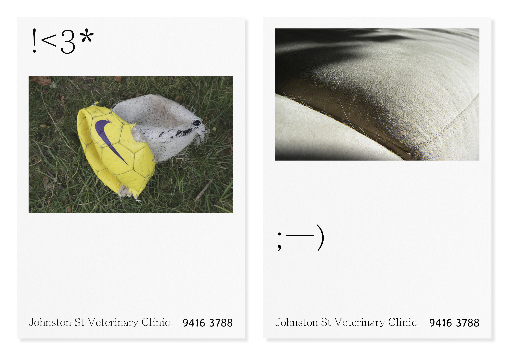
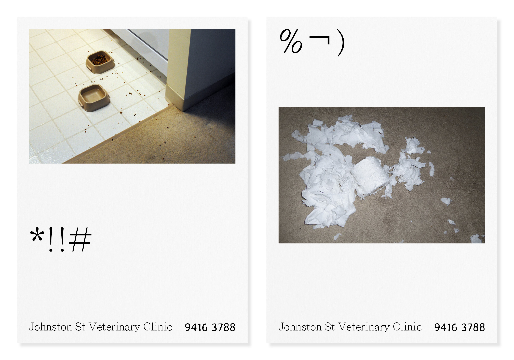
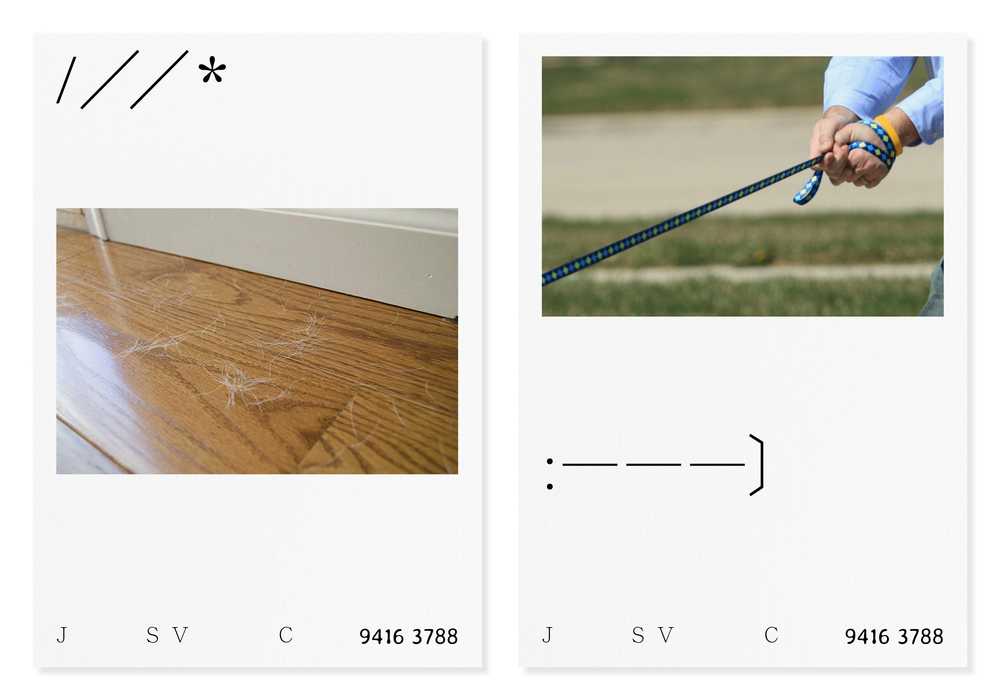
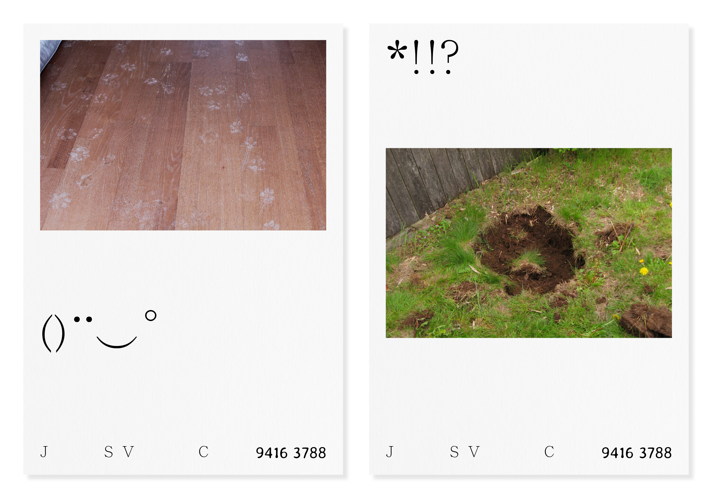
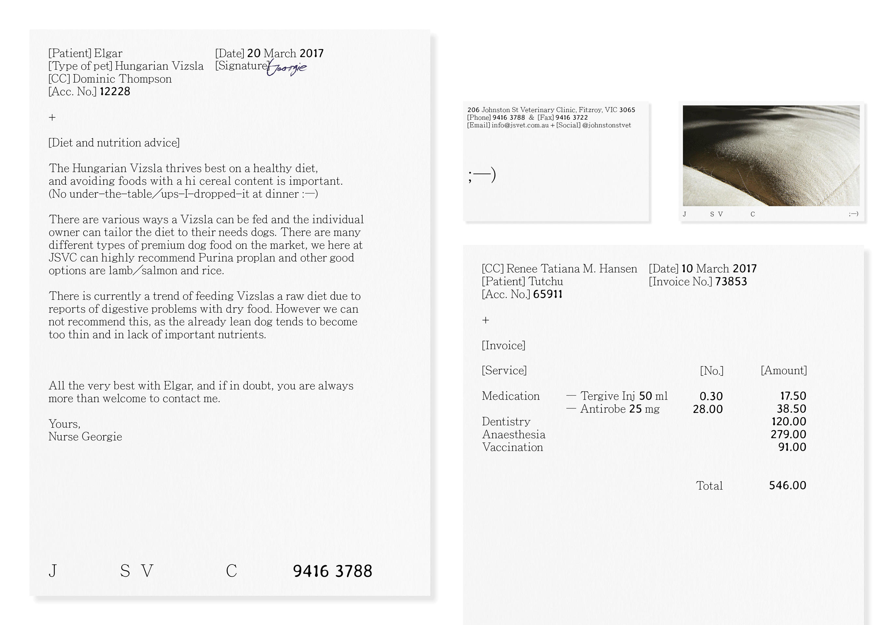
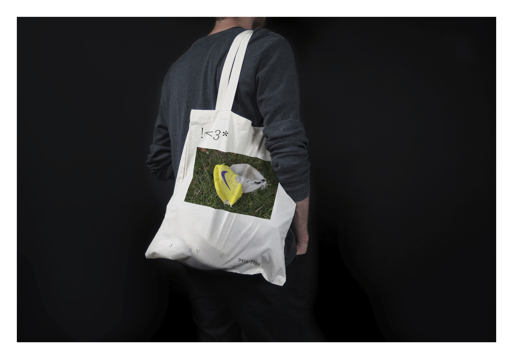
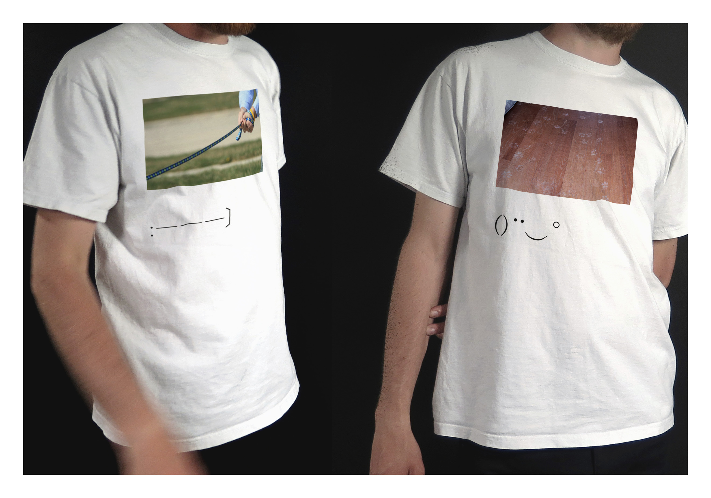

Brand development for Johnston St Veterinary Clinic
My concept for Johnston St Veterinary Clinic is drawn from the crazy, happy, energetic personalities of pets. Their quirky behaviour, things they do, their favourite toy or spot in the sun: what surrounds the pet, and somehow gives an insight into its character. This cheeky but lovely pet-character is drawn up by 'pet-situations': the trace of a pet.
 Alternative, shortened logotype:
 The goal was for the new identity to maintain the lively / quirky / warm feel of the clinic, while also emphasising the professional side their business as an important aspect; communicated with a intricate serif typography and organic/ 'bony' numbers, which stand as a softer, more humane (and fun) voice.
  